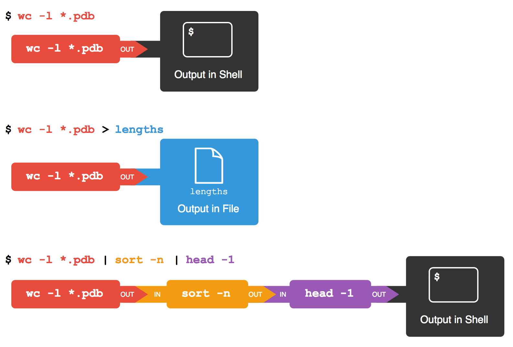

Pipes and Filters
Learning Objectives
- Redirect a command's output to a file.
- Process a file instead of keyboard input using redirection.
- Construct command pipelines with two or more stages.
- Explain what usually happens if a program or pipeline isn't given any input to process.
- Explain Unix's 'small pieces, loosely joined' philosophy.
first | secondis a pipeline: the output of the first command is used as the input to the second.- The best way to use the shell is to use pipes to combine simple single-purpose programs (filters).
Now that we know a few basic commands,
we can finally look at the shell's most powerful feature:
the ease with which it lets us combine existing programs in new ways.
We'll start with a directory called molecules
that contains six files describing some simple organic molecules.
The .pdb extension indicates that these files are in Protein Data Bank format,
a simple text format that specifies the type and position of each atom in the molecule.
$ ls molecules
cubane.pdb ethane.pdb methane.pdb
octane.pdb pentane.pdb propane.pdb
Let's go into that directory with cd and run the command wc *.pdb.
wc is the "word count" command:
it counts the number of lines, words, and characters in files.
The * in *.pdb matches zero or more characters,
so the shell turns *.pdb into a list of all .pdb files in the current directory:
$ cd molecules
$ wc *.pdb
20 156 1158 cubane.pdb
12 84 622 ethane.pdb
9 57 422 methane.pdb
30 246 1828 octane.pdb
21 165 1226 pentane.pdb
15 111 825 propane.pdb
107 819 6081 total
Wildcards
* is a wildcard. It matches zero or more
characters, so *.pdb matches ethane.pdb, propane.pdb, and every
file that ends with '.pdb'. On the other hand, p*.pdb only matches
pentane.pdb and propane.pdb, because the 'p' at the front only
matches filenames that begin with the letter 'p'.
? is also a wildcard, but it only matches a single character. This
means that p?.pdb would match pi.pdb or p5.pdb (if we had these two
files in the molecules directory), but not propane.pdb.
We can use any number of wildcards at a time: for example, p*.p?*
matches anything that starts with a 'p' and ends with '.', 'p', and at
least one more character (since the ? has to match one character, and
the final * can match any number of characters). Thus, p*.p?* would
match preferred.practice, and even p.pi (since the first * can
match no characters at all), but not quality.practice (doesn't start
with 'p') or preferred.p (there isn't at least one character after the
'.p').
When the shell sees a wildcard, it expands the wildcard to create a
list of matching filenames before running the command that was
asked for. As an exception, if a wildcard expression does not match
any file, Bash will pass the expression as an argument to the command
as it is. For example typing ls *.pdf in the molecules directory
(which contains only files with names ending with .pdb) results in
an error message that there is no file called *.pdf.
However, generally commands like wc and ls see the lists of
file names matching these expressions, but not the wildcards
themselves. It is the shell, not the other programs, that deals with
expanding wildcards, and this is another example of orthogonal design.
Using Wildcards
When run in the molecules directory, which ls command(s) will
produce this output?
ethane.pdb methane.pdb
ls *t*ane.pdbls *t?ne.*ls *t??ne.pdbls ethane.*
SolutionClick to expand
If we run wc -l instead of just wc,
the output shows only the number of lines per file:
$ wc -l *.pdb
20 cubane.pdb
12 ethane.pdb
9 methane.pdb
30 octane.pdb
21 pentane.pdb
15 propane.pdb
107 total
We can also use -w to get only the number of words,
or -c to get only the number of characters.
Which of these files is shortest? It's an easy question to answer when there are only six files, but what if there were 6000? Our first step toward a solution is to run the command:
$ wc -l *.pdb > lengths.txt
The greater than symbol, >, tells the shell to redirect the command's output
to a file instead of printing it to the screen. (This is why there is no screen output:
everything that wc would have printed has gone into the
file lengths.txt instead.) The shell will create
the file if it doesn't exist. If the file exists, it will be
silently overwritten, which may lead to data loss and thus requires
some caution.
ls lengths.txt confirms that the file exists:
$ ls lengths.txt
lengths.txt
We can now send the content of lengths.txt to the screen using cat lengths.txt.
cat stands for "concatenate":
it prints the contents of files one after another.
There's only one file in this case,
so cat just shows us what it contains:
$ cat lengths.txt
20 cubane.pdb
12 ethane.pdb
9 methane.pdb
30 octane.pdb
21 pentane.pdb
15 propane.pdb
107 total
Output Page by Page
We'll continue to use cat in this lesson, for convenience and consistency,
but it has the disadvantage that it always dumps the whole file onto your screen.
More useful in practice is the command less,
which you use with $ less lengths.txt.
This displays a screenful of the file, and then stops.
You can go forward one screenful by pressing the spacebar,
or back one by pressing b. Press q to quit.
Now let's use the sort command to sort its contents.
We will also use the -n flag to specify that the sort is
numerical instead of alphabetical.
This does not change the file;
instead, it sends the sorted result to the screen:
$ sort -n lengths.txt
9 methane.pdb
12 ethane.pdb
15 propane.pdb
20 cubane.pdb
21 pentane.pdb
30 octane.pdb
107 total
We can put the sorted list of lines in another temporary file called sorted-lengths.txt
by putting > sorted-lengths.txt after the command,
just as we used > lengths.txt to put the output of wc into lengths.txt.
Once we've done that,
we can run another command called head to get the first few lines in sorted-lengths.txt:
$ sort -n lengths.txt > sorted-lengths.txt
$ head -n 1 sorted-lengths.txt
9 methane.pdb
Using -n 1 with head tells it that
we only want the first line of the file;
-n 20 would get the first 20,
and so on.
Since sorted-lengths.txt contains the lengths of our files ordered from least to greatest,
the output of head must be the file with the fewest lines.
Redirecting to the same file
It's a very bad idea to try redirecting the output of a command that operates on a file to the same file. For example:
$ sort -n lengths.txt > lengths.txt
Doing something like this may give you
incorrect results and/or delete
the contents of lengths.txt.
If you think this is confusing,
you're in good company:
even once you understand what wc, sort, and head do,
all those intermediate files make it hard to follow what's going on.
We can make it easier to understand by running sort and head together:
$ sort -n lengths.txt | head -n 1
9 methane.pdb
The vertical bar, |, between the two commands is called a pipe.
It tells the shell that we want to use
the output of the command on the left
as the input to the command on the right.
The computer might create a temporary file if it needs to,
or copy data from one program to the other in memory,
or something else entirely;
we don't have to know or care.
Nothing prevents us from chaining pipes consecutively.
That is, we can for example send the output of wc directly to sort,
and then the resulting output to head.
Thus we first use a pipe to send the output of wc to sort:
$ wc -l *.pdb | sort -n
9 methane.pdb
12 ethane.pdb
15 propane.pdb
20 cubane.pdb
21 pentane.pdb
30 octane.pdb
107 total
And now we send the output of this pipe, through another pipe, to head, so that the full pipeline becomes:
$ wc -l *.pdb | sort -n | head -n 1
9 methane.pdb
This is exactly like a mathematician nesting functions like log(3x)
and saying "the log of three times x".
In our case,
the calculation is "head of sort of line count of *.pdb".
Here's what actually happens behind the scenes when we create a pipe. When a computer runs a program --- any program --- it creates a process in memory to hold the program's software and its current state. Every process has an input channel called standard input. (By this point, you may be surprised that the name is so memorable, but don't worry: most Unix programmers call it "stdin"). Every process also has a default output channel called standard output (or "stdout"). A second output channel called standard error (stderr) also exists. This channel is typically used for error or diagnostic messages, and it allows a user to pipe the output of one program into another while still receiving error messages in the terminal.
The shell is actually just another program. Under normal circumstances, whatever we type on the keyboard is sent to the shell on its standard input, and whatever it produces on standard output is displayed on our screen. When we tell the shell to run a program, it creates a new process and temporarily sends whatever we type on our keyboard to that process's standard input, and whatever the process sends to standard output to the screen.
Here's what happens when we run wc -l *.pdb > lengths.txt.
The shell starts by telling the computer to create a new process to run the wc program.
Since we've provided some filenames as arguments,
wc reads from them instead of from standard input.
And since we've used > to redirect output to a file,
the shell connects the process's standard output to that file.
If we run wc -l *.pdb | sort -n instead,
the shell creates two processes
(one for each process in the pipe)
so that wc and sort run simultaneously.
The standard output of wc is fed directly to the standard input of sort;
since there's no redirection with >,
sort's output goes to the screen.
And if we run wc -l *.pdb | sort -n | head -n 1,
we get three processes with data flowing from the files,
through wc to sort,
and from sort through head to the screen.

This simple idea is why Unix has been so successful.
Instead of creating enormous programs that try to do many different things,
Unix programmers focus on creating lots of simple tools that each do one job well,
and that work well with each other.
This programming model is called "pipes and filters".
We've already seen pipes;
a filter is a program like wc or sort
that transforms a stream of input into a stream of output.
Almost all of the standard Unix tools can work this way:
unless told to do otherwise,
they read from standard input,
do something with what they've read,
and write to standard output.
The key is that any program that reads lines of text from standard input and writes lines of text to standard output can be combined with every other program that behaves this way as well. You can and should write your programs this way so that you and other people can put those programs into pipes to multiply their power.
Redirecting Input
As well as using > to redirect a program's output, we can use < to
redirect its input, i.e., to read from a file instead of from standard
input. For example, instead of writing wc ammonia.pdb, we could write
wc < ammonia.pdb. In the first case, wc gets a command line
argument telling it what file to open. In the second, wc doesn't have
any command line arguments, so it reads from standard input, but we
have told the shell to send the contents of ammonia.pdb to wc's
standard input.
Nelle's Pipeline: Checking Files
Nelle has run her samples through the assay machines
and created 17 files in the north-pacific-gyre/2012-07-03 directory described earlier.
As a quick sanity check, starting from her home directory, Nelle types:
$ cd north-pacific-gyre/2012-07-03
$ wc -l *.txt
The output is 18 lines that look like this:
300 NENE01729A.txt
300 NENE01729B.txt
300 NENE01736A.txt
300 NENE01751A.txt
300 NENE01751B.txt
300 NENE01812A.txt
... ...
Now she types this:
$ wc -l *.txt | sort -n | head -n 5
240 NENE02018B.txt
300 NENE01729A.txt
300 NENE01729B.txt
300 NENE01736A.txt
300 NENE01751A.txt
Whoops: one of the files is 60 lines shorter than the others. When she goes back and checks it, she sees that she did that assay at 8:00 on a Monday morning --- someone was probably in using the machine on the weekend, and she forgot to reset it. Before re-running that sample, she checks to see if any files have too much data:
$ wc -l *.txt | sort -n | tail -n 5
300 NENE02040B.txt
300 NENE02040Z.txt
300 NENE02043A.txt
300 NENE02043B.txt
5040 total
Those numbers look good --- but what's that 'Z' doing there in the third-to-last line? All of her samples should be marked 'A' or 'B'; by convention, her lab uses 'Z' to indicate samples with missing information. To find others like it, she does this:
$ ls *Z.txt
NENE01971Z.txt NENE02040Z.txt
Sure enough,
when she checks the log on her laptop,
there's no depth recorded for either of those samples.
Since it's too late to get the information any other way,
she must exclude those two files from her analysis.
She could just delete them using rm,
but there are actually some analyses she might do later where depth doesn't matter,
so instead, she'll just be careful later on to select files using the wildcard expression *[AB].txt.
As always,
the * matches any number of characters;
the expression [AB] matches either an 'A' or a 'B',
so this matches all the valid data files she has.
What Does sort -n Do?
If we run sort on this file:
10
2
19
22
6
the output is:
10
19
2
22
6
If we run sort -n on the same input, we get this instead:
2
6
10
19
22
Explain why -n has this effect.
SolutionClick to expand
What Does < Mean?
Change directory to data-shell (the top level of our downloaded example data).
What is the difference between:
$ wc -l notes.txt
and:
$ wc -l < notes.txt
SolutionClick to expand
What Does >> Mean?
What is the difference between:
$ echo hello > testfile01.txt
and:
$ echo hello >> testfile02.txt
Hint: Try executing each command twice in a row and then examining the output files.
More on Wildcards
Sam has a directory containing calibration data, datasets, and descriptions of the datasets:
2015-10-23-calibration.txt
2015-10-23-dataset1.txt
2015-10-23-dataset2.txt
2015-10-23-dataset_overview.txt
2015-10-26-calibration.txt
2015-10-26-dataset1.txt
2015-10-26-dataset2.txt
2015-10-26-dataset_overview.txt
2015-11-23-calibration.txt
2015-11-23-dataset1.txt
2015-11-23-dataset2.txt
2015-11-23-dataset_overview.txt
Before heading off to another field trip, she wants to back up her data and send some datasets to her colleague Bob. Sam uses the following commands to get the job done:
$ cp *dataset* /backup/datasets
$ cp ____calibration____ /backup/calibration
$ cp 2015-____-____ ~/send_to_bob/all_november_files/
$ cp ____ ~/send_to_bob/all_datasets_created_on_a_23rd/
Help Sam by filling in the blanks.
SolutionClick to expand
Piping Commands Together
In our current directory, we want to find the 3 files which have the least number of lines. Which command listed below would work?
wc -l * > sort -n > head -n 3wc -l * | sort -n | head -n 1-3wc -l * | head -n 3 | sort -nwc -l * | sort -n | head -n 3
SolutionClick to expand
Why Does uniq Only Remove Adjacent Duplicates?
The command uniq removes adjacent duplicated lines from its input.
For example, the file data-shell/data/salmon.txt contains:
coho
coho
steelhead
coho
steelhead
steelhead
Running the command uniq salmon.txt from the data-shell/data directory produces:
coho
steelhead
coho
steelhead
Why do you think uniq only removes adjacent duplicated lines?
(Hint: think about very large data sets.) What other command could
you combine with it in a pipe to remove all duplicated lines?
SolutionClick to expand
Pipe Reading Comprehension
A file called animals.txt (in the data-shell/data folder) contains the following data:
2012-11-05,deer
2012-11-05,rabbit
2012-11-05,raccoon
2012-11-06,rabbit
2012-11-06,deer
2012-11-06,fox
2012-11-07,rabbit
2012-11-07,bear
What text passes through each of the pipes and the final redirect in the pipeline below?
$ cat animals.txt | head -n 5 | tail -n 3 | sort -r > final.txt
Hint: build the pipeline up one command at a time to test your understanding
Pipe Construction
For the file animals.txt from the previous exercise, the command:
$ cut -d , -f 2 animals.txt
produces the following output:
deer
rabbit
raccoon
rabbit
deer
fox
rabbit
bear
What other command(s) could be added to this in a pipeline to find out what animals the file contains (without any duplicates in their names)?
SolutionClick to expand
Removing Unneeded Files
Suppose you want to delete your processed data files, and only keep
your raw files and processing script to save storage.
The raw files end in .dat and the processed files end in .txt.
Which of the following would remove all the processed data files,
and only the processed data files?
rm ?.txtrm *.txtrm * .txtrm *.*
SolutionClick to expand
Wildcard Expressions
Wildcard expressions can be very complex, but you can sometimes write
them in ways that only use simple syntax, at the expense of being a bit
more verbose.
Consider the directory data-shell/north-pacific-gyre/2012-07-03 :
the wildcard expression *[AB].txt
matches all files ending in A.txt or B.txt. Imagine you forgot about
this.
Can you match the same set of files with basic wildcard expressions that do not use the
[]syntax? Hint: You may need more than one expression.The expression that you found and the expression from the lesson match the same set of files in this example. What is the small difference between the outputs?
Under what circumstances would your new expression produce an error message where the original one would not?
SolutionClick to expand
Which Pipe?
The file data-shell/data/animals.txt contains 586 lines of data formatted as follows:
2012-11-05,deer
2012-11-05,rabbit
2012-11-05,raccoon
2012-11-06,rabbit
...
Assuming your current directory is data-shell/data/,
what command would you use to produce a table that shows
the total count of each type of animal in the file?
grep {deer, rabbit, raccoon, deer, fox, bear} animals.txt | wc -lsort animals.txt | uniq -csort -t, -k2,2 animals.txt | uniq -ccut -d, -f 2 animals.txt | uniq -ccut -d, -f 2 animals.txt | sort | uniq -ccut -d, -f 2 animals.txt | sort | uniq -c | wc -l
SolutionClick to expand
Appending Data
Consider the file animals.txt, used in previous exercise.
After these commands, select the answer that
corresponds to the file animalsUpd.txt:
$ head -3 animals.txt > animalsUpd.txt
$ tail -2 animals.txt >> animalsUpd.txt
- The first three lines of
animals.txt - The last two lines of
animals.txt - The first three lines and the last two lines of
animals.txt - The second and third lines of
animals.txt
SolutionClick to expand
Key Points
catdisplays the contents of its inputs.headdisplays the first few lines of its input.taildisplays the last few lines of its input.sortsorts its inputs.wccounts lines, words, and characters in its inputs.*matches zero or more characters in a filename, so*.txtmatches all files ending in.txt.?matches any single character in a filename, so?.txtmatchesa.txtbut notany.txt.command > fileredirects a command's output to a file.
CC BY 4.0 - Based on shell-novice © 2016–2017 Software Carpentry Foundation